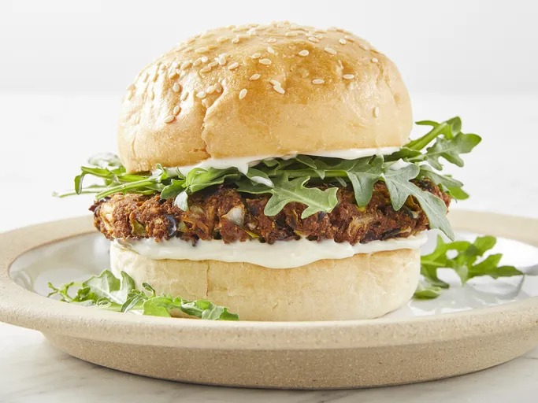

Homemade black bean veggie burgers

These black bean burgers are healthy, hearty, and packed with nutritious veggies.
Ingredients
- Cooking spray
- 1 can black beans
- 1/2 green bell pepper
- 1/2 onion cut in wedges
- 3 peeled garlic cloves
- 1 egg
- 1 tablespoon chili powder
- 1 tablespoon ground cummin
- 1 teaspoon hot sauce
- 1/2 cup bread crumbs
Directions
Step 1
Preheat an outdoor grill for high heat. Lightly coat a sheet of aluminum foil with cooking spray.
Step 2
Mash black beans in a medium bowl with a fork until thick and pasty.
Step 3
Finely chop bell pepper, onion, and garlic in a food processor. Stir chopped vegetables into mashed beans.
Step 4
Combine egg, chili powder, cumin, and chili sauce in a small bowl; stir into mashed bean mixture to combine. Mix in bread crumbs until mixture is sticky and holds together.
Step 5
Divide mixture into four patties; place on the prepared foil.
Step 6
Grill on the preheated grill for about 8 minutes on each side. Serve and enjoy!
Home Page